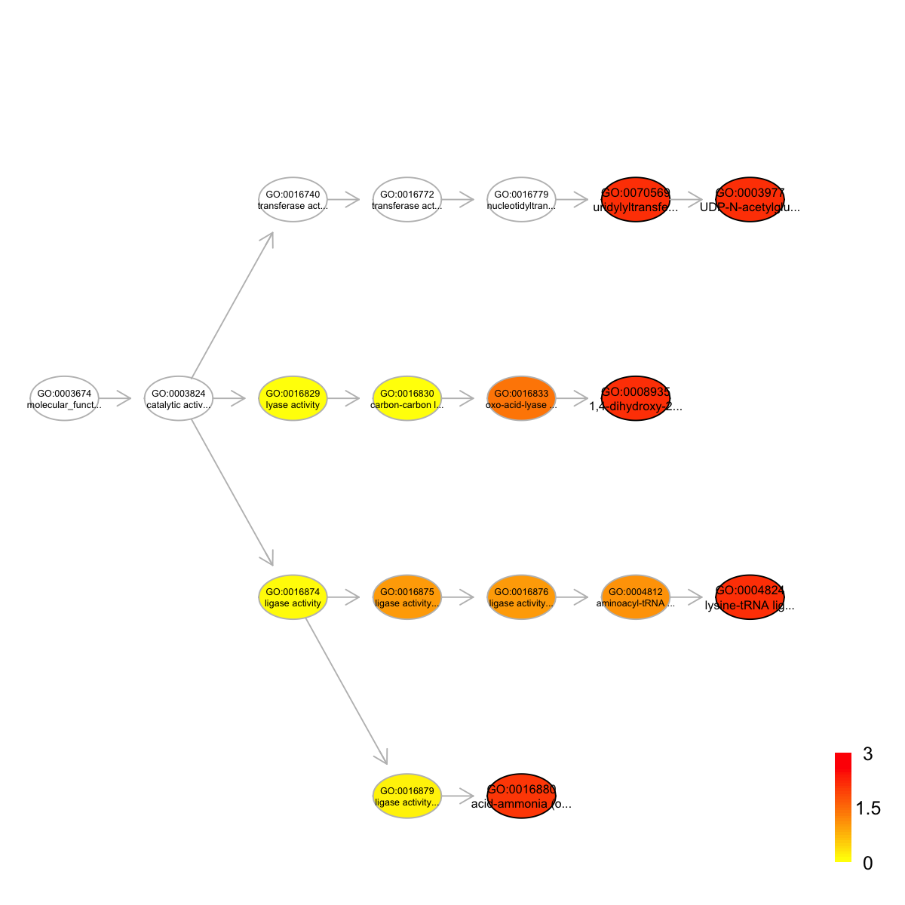
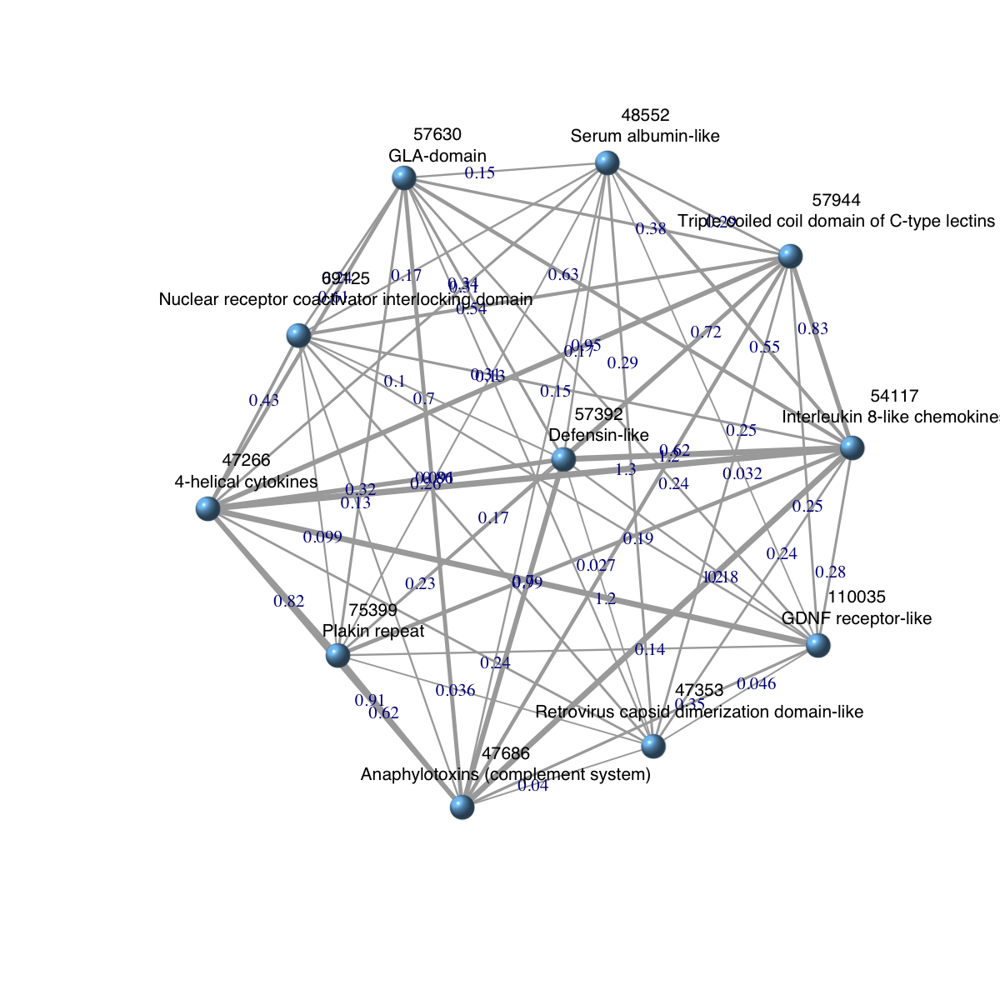

'Ancestral_domainome' (from package 'dcGOR' version 1.0.5) has been loaded into the working environment
Ancestral_domainome
An object of S4 class 'Anno'
@annoData: 2019 domains, 875 terms
@termData (InfoDataFrame)
termNames: 3 4 5 ... 1743 1750 (875 total)
tvarLabels: left_id right_id taxon_id ... branchlength common_name (8
total)
@domainData (InfoDataFrame)
domainNames: 46458 46548 46557 ... 161266 161270 (2019 total)
dvarLabels: sunid level classification description
# extract a list of domains that are present at Metazoa
flag_genome <- which(tData(Ancestral_domainome)$name=="Metazoa")
flag_domain <- annoData(Ancestral_domainome)[,flag_genome]!=0
domains_metazoa <- domainData(Ancestral_domainome)[flag_domain,]
domains_metazoa
An object of S4 class 'InfoDataFrame'
rowNames: 46458 46548 46561 ... 161245 161270 (1292 total)
colNames: sunid level classification description
# extract a list of domains that are present at human
flag_genome <- which(tData(Ancestral_domainome)$name=="Homo sapiens")
flag_domain <- annoData(Ancestral_domainome)[,flag_genome]!=0
domains_human <- domainData(Ancestral_domainome)[flag_domain,]
domains_human
An object of S4 class 'InfoDataFrame'
rowNames: 46458 46548 46561 ... 161245 161256 (1112 total)
colNames: sunid level classification description
# calculate domains unique in human
domains_human_unique <- setdiff(rowNames(domains_human), rowNames(domains_metazoa))
length(domains_human_unique)
[1] 58
Start at 2015-06-04 16:01:15
First, load the ontology 'GOBP', the domain 'SCOP.sf', and their associations (2015-06-04 16:01:15) ...
'onto.GOBP' (from package 'dcGOR' version 1.0.5) has been loaded into the working environment
'SCOP.sf' (from package 'dcGOR' version 1.0.5) has been loaded into the working environment
'SCOP.sf2GOBP' (from package 'dcGOR' version 1.0.5) has been loaded into the working environment
Second, perform enrichment analysis using HypergeoTest (2015-06-04 16:02:22) ...
There are 5471 terms being used, each restricted within [10,1000] annotations
Last, adjust the p-values using the BH method (2015-06-04 16:02:26) ...
End at 2015-06-04 16:02:28
Runtime in total is: 73 secs
eoutput
An object of S4 class 'Eoutput', containing following slots:
@domain: 'SCOP.sf'
@ontology: 'GOBP'
@term_info: a data.frame of 2207 terms X 5 information
@anno: a list of 2207 terms, each storing annotated domains
@data: a vector containing a group of 43 input domains (annotatable)
@background: a vector containing a group of 1163 background domains (annotatable)
@overlap: a list of 2207 terms, each containing domains overlapped with input domains
@zscore: a vector of 2207 terms, containing z-scores
@pvalue: a vector of 2207 terms, containing p-values
@adjp: a vector of 2207 terms, containing adjusted p-values
In summary, a total of 2207 terms ('GOBP') are analysed for a group of 43 input domains ('SCOP.sf')
A file ('GOBP_enrichments.txt') has been written into your local directory ('/Users/hfang/Sites/SUPERFAMILY/dcGOR')
### view the top 5 significant terms
view(eoutput, top_num=5, sortBy="pvalue", details=FALSE)
term_id nAnno nGroup nOverlap zscore pvalue adjp
GO:0007275 GO:0007275 1066 43 43 2.01 0.0e+00 0.0e+00
GO:0048513 GO:0048513 972 43 43 2.96 0.0e+00 0.0e+00
GO:0048731 GO:0048731 1039 43 43 2.31 0.0e+00 0.0e+00
GO:0034138 GO:0034138 558 43 36 4.78 1.4e-07 7.7e-05
GO:0002224 GO:0002224 564 43 36 4.71 2.0e-07 7.9e-05
term_name
GO:0007275 multicellular organismal development
GO:0048513 organ development
GO:0048731 system development
GO:0034138 toll-like receptor 3 signaling pathway
GO:0002224 toll-like receptor signaling pathway
Ontology 'GOBP' containing 14 nodes/terms (including 5 in query; also highlighted in frame) has been shown in your screen, with colorbar indicating -1*log10(adjusted p-values)
Start at 2015-06-04 16:02:33
First, load the ontology 'GOBP', the domain 'SCOP.sf', and their associations (2015-06-04 16:02:33) ...
'onto.GOBP' (from package 'dcGOR' version 1.0.5) has been loaded into the working environment
'SCOP.sf' (from package 'dcGOR' version 1.0.5) has been loaded into the working environment
'SCOP.sf2GOBP' (from package 'dcGOR' version 1.0.5) has been loaded into the working environment
Second, perform enrichment analysis using HypergeoTest (2015-06-04 16:03:43) ...
There are 5453 terms being used, each restricted within [10,1000] annotations
Last, adjust the p-values using the BH method (2015-06-04 16:03:47) ...
End at 2015-06-04 16:03:48
Runtime in total is: 75 secs
eoutput
An object of S4 class 'Eoutput', containing following slots:
@domain: 'SCOP.sf'
@ontology: 'GOBP'
@term_info: a data.frame of 2206 terms X 5 information
@anno: a list of 2206 terms, each storing annotated domains
@data: a vector containing a group of 43 input domains (annotatable)
@background: a vector containing a group of 1083 background domains (annotatable)
@overlap: a list of 2206 terms, each containing domains overlapped with input domains
@zscore: a vector of 2206 terms, containing z-scores
@pvalue: a vector of 2206 terms, containing p-values
@adjp: a vector of 2206 terms, containing adjusted p-values
In summary, a total of 2206 terms ('GOBP') are analysed for a group of 43 input domains ('SCOP.sf')
A file ('GOBP_enrichments_customised.txt') has been written into your local directory ('/Users/hfang/Sites/SUPERFAMILY/dcGOR')
### view the top 5 significant terms
view(eoutput, top_num=5, sortBy="pvalue", details=FALSE)
term_id nAnno nGroup nOverlap zscore pvalue adjp
GO:0007275 GO:0007275 1029 43 43 1.53 0.0e+00 0.00000
GO:0048513 GO:0048513 942 43 43 2.59 0.0e+00 0.00000
GO:0048731 GO:0048731 1003 43 43 1.89 0.0e+00 0.00000
GO:0034138 GO:0034138 541 43 36 4.52 5.1e-07 0.00027
GO:0002224 GO:0002224 546 43 36 4.46 6.8e-07 0.00027
term_name
GO:0007275 multicellular organismal development
GO:0048513 organ development
GO:0048731 system development
GO:0034138 toll-like receptor 3 signaling pathway
GO:0002224 toll-like receptor signaling pathway
Ontology 'GOBP' containing 14 nodes/terms (including 5 in query; also highlighted in frame) has been shown in your screen, with colorbar indicating -1*log10(adjusted p-values)
Ontology 'GOBP' containing 14 nodes/terms (including 5 in query; also highlighted in frame) has been shown in your screen, with colorbar indicating -1*log10(adjusted p-values)
Start at 2015-06-04 16:03:57
First, load the ontology 'GOMF', the domain 'SCOP.sf', and their associations (2015-06-04 16:03:57) ...
'onto.GOMF' (from package 'dcGOR' version 1.0.5) has been loaded into the working environment
'SCOP.sf' (from package 'dcGOR' version 1.0.5) has been loaded into the working environment
'SCOP.sf2GOMF' (from package 'dcGOR' version 1.0.5) has been loaded into the working environment
Second, perform enrichment analysis using HypergeoTest (2015-06-04 16:04:02) ...
There are 810 terms being used, each restricted within [10,1000] annotations
Last, adjust the p-values using the BH method (2015-06-04 16:04:02) ...
End at 2015-06-04 16:04:02
Runtime in total is: 5 secs
eoutput
An object of S4 class 'Eoutput', containing following slots:
@domain: 'SCOP.sf'
@ontology: 'GOMF'
@term_info: a data.frame of 175 terms X 5 information
@anno: a list of 175 terms, each storing annotated domains
@data: a vector containing a group of 34 input domains (annotatable)
@background: a vector containing a group of 1007 background domains (annotatable)
@overlap: a list of 175 terms, each containing domains overlapped with input domains
@zscore: a vector of 175 terms, containing z-scores
@pvalue: a vector of 175 terms, containing p-values
@adjp: a vector of 175 terms, containing adjusted p-values
In summary, a total of 175 terms ('GOMF') are analysed for a group of 34 input domains ('SCOP.sf')
A file ('GOMF_enrichments.txt') has been written into your local directory ('/Users/hfang/Sites/SUPERFAMILY/dcGOR')
### view the top 5 significant terms
view(eoutput, top_num=5, sortBy="pvalue", details=FALSE)
term_id nAnno nGroup nOverlap zscore pvalue adjp
GO:0008935 GO:0008935 14 34 4 5.25 5.2e-05 0.0073
GO:0004824 GO:0004824 48 34 7 4.40 1.0e-04 0.0073
GO:0070569 GO:0070569 633 34 30 3.11 1.7e-04 0.0073
GO:0003977 GO:0003977 633 34 30 3.11 1.7e-04 0.0073
GO:0016880 GO:0016880 55 34 7 3.95 2.8e-04 0.0090
term_name
GO:0008935 1,4-dihydroxy-2-naphthoyl-CoA synthase activity
GO:0004824 lysine-tRNA ligase activity
GO:0070569 uridylyltransferase activity
GO:0003977 UDP-N-acetylglucosamine diphosphorylase activity
GO:0016880 acid-ammonia (or amide) ligase activity
Ontology 'GOMF' containing 18 nodes/terms (including 5 in query; also highlighted in frame) has been shown in your screen, with colorbar indicating -1*log10(adjusted p-values)
Start at 2015-06-04 16:04:05
First, load the ontology 'HPPA', the domain 'SCOP.sf', and their associations (2015-06-04 16:04:05) ...
'onto.HPPA' (from package 'dcGOR' version 1.0.5) has been loaded into the working environment
'SCOP.sf' (from package 'dcGOR' version 1.0.5) has been loaded into the working environment
'SCOP.sf2HPPA' (from package 'dcGOR' version 1.0.5) has been loaded into the working environment
Second, perform enrichment analysis using HypergeoTest (2015-06-04 16:04:07) ...
There are 259 terms being used, each restricted within [10,1000] annotations
Last, adjust the p-values using the BH method (2015-06-04 16:04:07) ...
End at 2015-06-04 16:04:07
Runtime in total is: 2 secs

eoutput
An object of S4 class 'Eoutput', containing following slots:
@domain: 'SCOP.sf'
@ontology: 'HPPA'
@term_info: a data.frame of 37 terms X 5 information
@anno: a list of 37 terms, each storing annotated domains
@data: a vector containing a group of 4 input domains (annotatable)
@background: a vector containing a group of 166 background domains (annotatable)
@overlap: a list of 37 terms, each containing domains overlapped with input domains
@zscore: a vector of 37 terms, containing z-scores
@pvalue: a vector of 37 terms, containing p-values
@adjp: a vector of 37 terms, containing adjusted p-values
In summary, a total of 37 terms ('HPPA') are analysed for a group of 4 input domains ('SCOP.sf')
A file ('HPPA_enrichments.txt') has been written into your local directory ('/Users/hfang/Sites/SUPERFAMILY/dcGOR')
### view the top 5 significant terms
view(eoutput, top_num=5, sortBy="pvalue", details=TRUE)
term_id nAnno nGroup nOverlap zscore pvalue adjp
HP:0000152 HP:0000152 115 4 4 1.340 0 0
HP:0000707 HP:0000707 132 4 4 1.020 0 0
HP:0000924 HP:0000924 146 4 4 0.747 0 0
HP:0001574 HP:0001574 88 4 4 1.900 0 0
HP:0002664 HP:0002664 106 4 4 1.520 0 0
term_name term_namespace
HP:0000152 Abnormality of head and neck Phenotypic_abnormality
HP:0000707 Abnormality of the nervous system Phenotypic_abnormality
HP:0000924 Abnormality of the skeletal system Phenotypic_abnormality
HP:0001574 Abnormality of the integument Phenotypic_abnormality
HP:0002664 Neoplasm Phenotypic_abnormality
term_distance members
HP:0000152 1 47686,75399,57581,57630
HP:0000707 1 47686,75399,57581,57630
HP:0000924 1 47686,75399,57581,57630
HP:0001574 1 47686,75399,57581,57630
HP:0002664 1 47686,75399,57581,57630
Ontology 'HPPA' containing 6 nodes/terms (including 5 in query; also highlighted in frame) has been shown in your screen, with colorbar indicating -1*log10(adjusted p-values)
Start at 2015-06-04 16:04:08
First, load the ontology 'DO', the domain 'SCOP.sf', and their associations (2015-06-04 16:04:08) ...
'onto.DO' (from package 'dcGOR' version 1.0.5) has been loaded into the working environment
'SCOP.sf' (from package 'dcGOR' version 1.0.5) has been loaded into the working environment
'SCOP.sf2DO' (from package 'dcGOR' version 1.0.5) has been loaded into the working environment
Second, perform enrichment analysis using HypergeoTest (2015-06-04 16:04:09) ...
There are 219 terms being used, each restricted within [10,1000] annotations
Last, adjust the p-values using the BH method (2015-06-04 16:04:09) ...
End at 2015-06-04 16:04:09
Runtime in total is: 1 secs
eoutput
An object of S4 class 'Eoutput', containing following slots:
@domain: 'SCOP.sf'
@ontology: 'DO'
@term_info: a data.frame of 109 terms X 5 information
@anno: a list of 109 terms, each storing annotated domains
@data: a vector containing a group of 11 input domains (annotatable)
@background: a vector containing a group of 219 background domains (annotatable)
@overlap: a list of 109 terms, each containing domains overlapped with input domains
@zscore: a vector of 109 terms, containing z-scores
@pvalue: a vector of 109 terms, containing p-values
@adjp: a vector of 109 terms, containing adjusted p-values
In summary, a total of 109 terms ('DO') are analysed for a group of 11 input domains ('SCOP.sf')
A file ('DO_enrichments.txt') has been written into your local directory ('/Users/hfang/Sites/SUPERFAMILY/dcGOR')
### view the top 5 significant terms
view(eoutput, top_num=5, sortBy="pvalue", details=TRUE)
term_id nAnno nGroup nOverlap zscore pvalue adjp
DOID:14566 DOID:14566 196 11 11 1.16 0.0e+00 0.0000
DOID:2583 DOID:2583 11 11 4 4.87 4.6e-05 0.0017
DOID:620 DOID:620 12 11 4 4.61 7.7e-05 0.0017
DOID:2115 DOID:2115 12 11 4 4.61 7.7e-05 0.0017
DOID:7004 DOID:7004 12 11 4 4.61 7.7e-05 0.0017
term_name term_namespace term_distance
DOID:14566 disease of cellular proliferation Disease_Ontology 1
DOID:2583 agammaglobulinemia Disease_Ontology 5
DOID:620 blood protein disease Disease_Ontology 4
DOID:2115 B cell deficiency Disease_Ontology 4
DOID:7004 ACTH-secreting pituitary adenoma Disease_Ontology 7
members
DOID:14566 57944,47353,57630,110035,69125,47686,48552,75399,57392,54117,47266
DOID:2583 47686,57392,54117,47266
DOID:620 47686,57392,54117,47266
DOID:2115 47686,57392,54117,47266
DOID:7004 47686,57392,54117,47266
Ontology 'DO' containing 15 nodes/terms (including 5 in query; also highlighted in frame) has been shown in your screen, with colorbar indicating -1*log10(adjusted p-values)
'onto.DO' (from package 'dcGOR' version 1.0.5) has been loaded into the working environment
g
An object of S4 class 'Onto'
@adjMatrix: a direct matrix of 6352 terms (parents/from) X 6352 terms (children/to)
@nodeInfo (InfoDataFrame)
nodeNames: DOID:4 DOID:630 DOID:7 ... DOID:5746 DOID:7438 (6352
total)
nodeAttr: term_id term_name term_namespace term_distance
'SCOP.sf2DO' (from package 'dcGOR' version 1.0.5) has been loaded into the working environment
Anno
An object of S4 class 'Anno'
@annoData: 219 domains, 548 terms
@termData (InfoDataFrame)
termNames: DOID:0014667 DOID:0050117 DOID:0080015 ... DOID:8541
DOID:9849 (548 total)
tvarLabels: ID Name Namespace Distance
@domainData (InfoDataFrame)
domainNames: 46458 46579 46689 ... 161070 161084 (219 total)
dvarLabels: id level description
An object of S4 class 'Onto'
@adjMatrix: a direct matrix of 549 terms (parents/from) X 549 terms (children/to)
@nodeInfo (InfoDataFrame)
nodeNames: DOID:4 DOID:630 DOID:7 ... DOID:9849 DOID:1070 (549 total)
nodeAttr: term_id term_name term_namespace term_distance annotations
IC
Start at 2015-06-04 16:04:13
First, extract all annotatable domains (2015-06-04 16:04:13)...
there are 11 input domains amongst 219 annotatable domains
Second, pre-compute semantic similarity between 129 terms (forced to be the most specific for each domain) using Resnik method (2015-06-04 16:04:13)...
Last, calculate pair-wise semantic similarity between 11 domains using BM.average method (2015-06-04 16:04:14)...
1 out of 11 (2015-06-04 16:04:14)
2 out of 11 (2015-06-04 16:04:14)
4 out of 11 (2015-06-04 16:04:14)
6 out of 11 (2015-06-04 16:04:14)
8 out of 11 (2015-06-04 16:04:14)
10 out of 11 (2015-06-04 16:04:14)
Finish at 2015-06-04 16:04:14
Runtime in total is: 1 secs
dnetwork
An object of S4 class 'Dnetwork'
@adjMatrix: a weighted symmetric matrix of 11 domains X 11 domains
@nodeInfo (InfoDataFrame)
nodeNames: 47266 47353 47686 ... 75399 110035 (11 total)
nodeAttr: id
## 5) heatmap the adjacency matrix of the domain network
D <- as.matrix(adjMatrix(dnetwork))
supraHex::visHeatmapAdv(D, Rowv=F, Colv=F, dendrogram="none", colormap="white-lightpink-darkred", zlim=c(0,1.2), KeyValueName="DO semantic similarity")
Your input object 'dnetwork' of class 'Dnetwork' has been converted into an object of class 'igraph'.
ig
IGRAPH UNW- 11 55 --
+ attr: name (v/c), id (v/c), weight (e/n)
'SCOP.sf2GOMF' (from package 'dcGOR' version 1.0.5) has been loaded into the working environment

Start at 2015-06-04 16:04:16
First, RWR on input graph (11 nodes and 55 edges) using input matrix (10 rows and 12 columns) as seeds (2015-06-04 16:04:16)...
using 'indirect' method to do RWR (2015-06-04 16:04:16)...
Second, calculate contact strength (2015-06-04 16:04:17)...
Third, generate the distribution of contact strength based on 2000 permutations on nodes respecting 'degree' (2015-06-04 16:04:17)...
1 out of 2000 (2015-06-04 16:04:17)
200 out of 2000 (2015-06-04 16:04:17)
400 out of 2000 (2015-06-04 16:04:18)
600 out of 2000 (2015-06-04 16:04:18)
800 out of 2000 (2015-06-04 16:04:18)
1000 out of 2000 (2015-06-04 16:04:19)
1200 out of 2000 (2015-06-04 16:04:19)
1400 out of 2000 (2015-06-04 16:04:20)
1600 out of 2000 (2015-06-04 16:04:20)
1800 out of 2000 (2015-06-04 16:04:21)
2000 out of 2000 (2015-06-04 16:04:21)
Last, estimate the significance of contact strength: zscore, pvalue, and BH adjusted-pvalue (2015-06-04 16:04:21)...
Also, construct the contact graph under the cutoff 1.0e-01 of adjusted-pvalue (2015-06-04 16:04:21)...
Your input object 'icontact' of class 'igraph' has been converted into an object of class 'Cnetwork'.
Finish at 2015-06-04 16:04:21
Runtime in total is: 5 secs
coutput
An object of S4 class 'Coutput', containing following slots:
@ratio: a matrix of 12 X 12, containing ratio
@zscore: a matrix of 12 X 12, containing z-scores
@pvalue: a matrix of 12 X 12, containing p-values
@adjp: a matrix of 12 X 12, containing adjusted p-values
@cnetwork: an object of S4 class 'Cnetwork', containing 5 interacting nodes
A file ('Coutput_adjp.txt') has been written into your local directory ('/Users/hfang/Sites/SUPERFAMILY/dcGOR')
A file ('Coutput_zscore.txt') has been written into your local directory ('/Users/hfang/Sites/SUPERFAMILY/dcGOR')
An object of S4 class 'Cnetwork'
@adjMatrix: a weighted symmetric matrix of 5 samples/terms X 5 samples/terms
@nodeInfo (InfoDataFrame)
nodeNames: GO:0097159 GO:1901363 GO:0005488 GO:0003676 GO:0003677
nodeAttr: name
Your input object 'cnet' of class 'Cnetwork' has been converted into an object of class 'igraph'.
ig
IGRAPH UNW- 5 10 --
+ attr: name (v/c), name.1 (v/c), weight (e/n)
### extract edge weight (with 2-digit precision)
x <- signif(E(ig)$weight, digits=2)
### rescale into an interval [1,4] as edge width
edge.width <- 1 + (x-min(x))/(max(x)-min(x))*3
### prepare the node labels (including term id and name)
ind <- match(V(ig)$name,termNames(Anno))
vertex.label <- paste(V(ig)$name, '\n', tData(Anno)[ind,]$Name, sep='')
### do visualisation
dnet::visNet(g=ig, vertex.label=vertex.label, vertex.label.color="blue", vertex.label.cex=0.7, vertex.shape="sphere", vertex.color="blue", edge.width=edge.width, edge.label=x, edge.label.cex=0.7)
){kind=link}
){kind=link}
){kind=link}
){kind=link}
){kind=link}
){kind=link}
){kind=link}